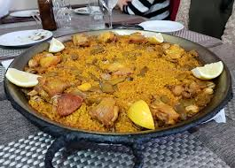

Spanish paella is a vibrant and flavorful rice dish that originated in Valencia, on Spain’s eastern coast. Traditionally cooked in a wide, shallow pan called a paellera, it features saffron-infused rice combined with a mix of ingredients such as seafood, chicken, rabbit, and vegetables. The dish is known for its signature golden color, rich aroma, and the prized crispy layer of rice at the bottom, known as the socarrat. Paella is a symbol of Spanish culture and is often enjoyed as a festive, communal meal.